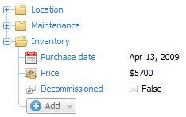
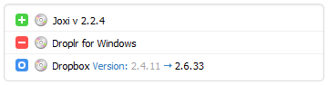
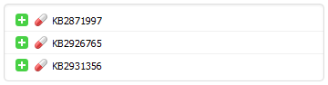
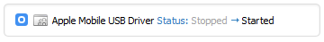
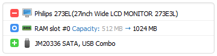

LVS
test Module1.0.0
- •
- •
- •
- •
- •
You can create an unlimited number of scheduled tasks with different triggers. Keep your data up-to-date automatically!
Centralized storage
TNI 3 storage is a regular folder on your hard drive. Each computer is represented there by a file about 35 KB in size. You can easily move these files to another storage or back them up. By sharing the storage folder, you can work with it from other computers.
Everything you need for hardware accounting
Attach notes, inventory numbers and additional text, as well as price and date fields to your computers. All of the data will be stored in a single place, always at hand. Hardware inventory has never been so easy and flexible.
Network at a glance
{kind=link}
The network tree can display various data: network name, IP address, inventory number, icon and name of operating system, online status indicator, and much more. Total Network Inventory 3 automatically detects virtual systems and marks them. All of this data can be used for searching: if you know anything about a computer, you can find it among hundreds of others in a moment!
Keeping data organized
{kind=link}
You can examine each scanned computer as if it was in front of you.
You will find detailed information on hardware, operating system, installed software, antiviruses, user accounts, etc., in the convenient categories of reports.
Include any number of computers and categories in a single report.
Table reports
Report constructor allows for presenting any asset inventory data in a convenient and descriptive table. What data will appear in your reports is totally up to you.
{kind=link}
Instant search
Search results show up as you type in your request: don't waste mouse clicks!
{kind=link}
Printing and exporting
{kind=link}
Any report can be printed in a brief or full form, copied to a spreadsheet processor or exported to PDF, RTF, ODT, HTML, and other formats.
See what's going on in your network
Each time you rescan a computer TNI creates a new snapshot of it. Change log compares all those snapshots and presents you with a comprehensive list of events: if anything was Added,  Removed or Changed, you'll see it here.
Removed or Changed, you'll see it here.
You can see software being installed, uninstalled or updated…

…hotfixes being applied…

…services changing their state…

…hardware being moved around…

…and a lot more!
The log features instant search and filtering capabilities and is available in the printable report form: